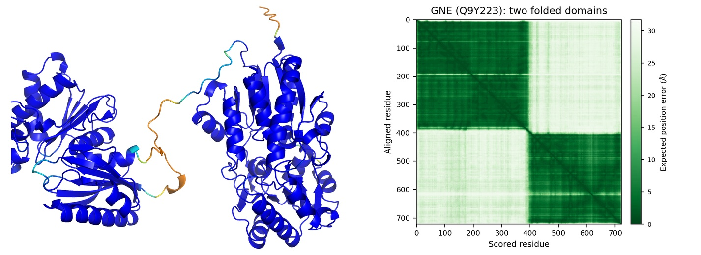
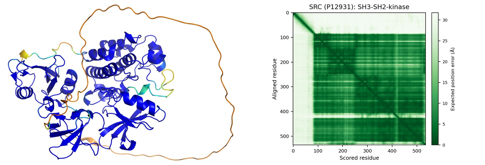

What you need (please prepare before the session)
- A laptop with a web browser.
- A Google account, already signed in. We use it for the free AlphaFold3 server (alphafoldserver.com); nothing to install, it runs in the browser.
- PyMOL installed, and opened once to check it launches. Free educational build for Windows and Mac: pymol.org/edu. The download link is sent by email, so request it ahead of the session.
Two exercises
Web page or PDF
This site and the PDF handouts contain the same exercises with the same section numbers, so you can switch between them at any point. The web version has copy buttons for the sequences and PyMOL commands.
If the AlphaFold3 server is down on the day, see the Server not working? tab.
Useful links
- AlphaFold3 server (alphafoldserver.com)
- AlphaFold Protein Structure Database (EBI)
- PyMOL educational build
Computer exercise, Part 1
Predicting the structure of a ciliary GTPase
with the AlphaFold3 server
Open as PDFAim of this exercise
In this exercise you will make and interpret your own protein structure predictions using the AlphaFold3 web server, using the ciliary GTPase ARL13B as an example (a protein many of you will recognise as a widely used marker for the ciliary membrane). You will:
- submit two predictions: ARL13B alone (apo) and ARL13B with a bound GTP and Mg2+ ligand (holo);
- read the pLDDT (per-residue confidence) and pTM (global fold) scores, in the browser and in PyMOL;
- use the five predicted models that AF output to see which parts of the protein are reliable (the core fold) and which are not (the flexible termini);
- probe how binding a ligand influences AlphaFold's confidence in the flexible switch regions;
- take a first look at the PAE plot as a measure of how well the relative positions of different parts of a model are known.
1Background: ARL13B
ARL13B is a small GTPase of the ARF/ARL family that localises to the ciliary membrane; loss-of-function mutations cause the ciliopathy Joubert syndrome. Like all small GTPases it has a compact G-domain that binds guanine nucleotide (GDP/GTP) and a Mg2+ ion, with two mobile switch loops that respond to the nucleotide. In addition:
- Two cysteines near the N-terminus (Cys8/Cys9) are palmitoylated, anchoring ARL13B to the ciliary membrane as a peripheral membrane protein. This stable membrane association is what makes it such a good marker for staining cilia.
- The long C-terminal extension is largely disordered and carries a ciliary-targeting motif.
The folded G-domain spans roughly residues 20–240; beyond about residue 250 the long C-terminal extension is largely disordered (about half of the whole protein).
2Getting started
3Submit two predictions
Submit both jobs now, so they compute while we go through the theory.
ARL13B_apo
Start a new job, add one protein entity, paste the sequence below, name it ARL13B_apo, and run it.
MFSLMASCCGWFKRWREPVRKVTLLMVGLDNAGKTATAKGIQGEYPEDVAPTVGFSKINLRQGKFEVTIFDLGGGIRIRGIWKNYYAESYGVIFVVDSSDEERMEETKEAMSEMLRHPRISGKPILVLANKQDKEGALGEADVIECLSLEKLVNEHKCLCQIEPCSAISGYGKKIDKSIKKGLYWLLHVIARDFDALNERIQKETTEQRALEEQEKQERAERVRKLREERKQNEQEQAELDGTSGLAELDPEPTNPFQPIASVIIENEGKLEREKKNQKMEKDSDGCHLKHKMEHEQIETQGQVNHNGQKNNEFGLVENYKEALTQQLKNEDETDRPSLESANGKKKTKKLRMKRNHRVEPLNIDDCAPESPTPPPPPPPVGWGTPKVTRLPKLEPLGETHHNDFYRKPLPPLAVPQRPNSDAHDVIS
ARL13B_GTP
Start another new job and set up three entities:
| Entity | Type | What to enter |
|---|---|---|
| 1 | Protein | the same HsARL13B sequence as Job 1 |
| 2 | Ligand | select GTP |
| 3 | Ion | select Mg2+ |
Name it ARL13B_GTP and run it.
4While it runs: what is AlphaFold doing?
AlphaFold does not simulate folding. It has learned, from the whole Protein Data Bank, to predict 3D coordinates directly from sequence and from an alignment of related sequences. Crucially it also predicts how confident it is:
- pLDDT: a per-residue score (0–100); the model is coloured by it. High = the local geometry is reliable.
- pTM: one global score (0–1) for the overall fold and domain arrangement.
5First look in the browser: pLDDT and pTM
When ARL13B_apo finishes, open it. The 3D viewer colours the model by pLDDT, on the AlphaFold scale:
| blue | very high (pLDDT > 90) |
| cyan | confident (90 ≥ pLDDT > 70) |
| yellow | low (70 ≥ pLDDT > 50) |
| orange | very low (pLDDT ≤ 50) |
6Open the models in PyMOL
The server returns five models per job (ranked by confidence). Download the ARL13B_apo results and unpack the zip. You will find five model coordinate files (*.cif) plus the confidence data.
.cif files into the PyMOL window, or use File > Open). Each loads as its own object.The five files load with long names (based on what you called your job), so typing out alignment commands is fiddly. Instead, use the one built-in command that superposes every loaded object onto the first one, whatever they are named. Just type:
alignto
7Colour by confidence in PyMOL
For AlphaFold models the per-residue pLDDT is stored in the B-factor column, so you can reproduce the AlphaFold colouring. The model is already shown as cartoon, so just colour it (orange = low confidence, blue = high):
spectrum b, orange_yellow_cyan_blue, minimum=40, maximum=100
Optionally, make the cartoon thickness track confidence as well:
cartoon putty
spectrum b, blue_white_red, minimum=20, maximum=50.8The switch regions: apo versus GTP-bound
Every small GTPase has two switch loops. Switch I carries a conserved threonine (here Thr52) that coordinates the Mg2+ and the nucleotide γ-phosphate; switch II follows the conserved DxxG motif (here from Asp71). These loops sense whether a nucleotide is bound. Select them in your apo model and put them on the confidence scale:
select switchI, resi 45-54 select switchII, resi 71-86 spectrum b, orange_yellow_cyan_blue, minimum=40, maximum=100 show sticks, (switchI or switchII) and not name C+N+O
Now bring in the second prediction.
ARL13B_GTP and load a model into the same PyMOL session (do not open a new one). You now have both apo and holo loaded; switch the apo objects off with their checkboxes in the object panel on the right, so only the GTP model shows. Colour it by pLDDT with the same command as before. The GTP and Mg2+ are shown automatically; do not run as cartoon, which would hide them.That is the core of Part 1. You have made two predictions and learned to read the pLDDT colouring, the spread of the five models, and how a flexible region can order up when a ligand binds.
Finished early? The optional section below introduces the PAE, the score we build on in Part 2, so it is a head start while others catch up.
Take-home: pLDDT is local; the spread of the five models is the uncertainty; low confidence (orange) means do not trust the local structure, including "helices"; a flexible region can order up when it binds a ligand or partner.
9Optional extension: the PAE
Only if you finish the core exercise with time to spare.
ARL13B_GTP model.pLDDT is local: it says nothing about whether two parts of the model are placed correctly relative to each other. That is what the PAE adds. In the plot the colour at (x, y) is the expected error in residue x once the model is aligned on residue y: dark = low error (relative position trusted), light = high error.
ARL13B_GTP. Where is the error low and where is it high? Match those dark and light regions back to what you already know about this protein: which parts should be locked rigidly together, and which should be free to float? Does the plot agree with that expectation? The result also reports an ipTM for the ligand: what do you think that number is measuring, and would it make you trust where the GTP was placed?We will predict a protein–protein complex and use the PAE and ipTM across the interface to judge whether the predicted interaction is real.
Computer exercise, Part 2
Predicting and validating a complex
the IFT52:IFT46 interaction, and how to read the PAE
Open as PDFAim of this exercise
In Part 1 you predicted the 3D structure of a single protein and learned to read the pLDDT and pTM confidence scores. A prediction becomes far more powerful when you ask it about a complex: do two proteins actually bind, and if so, how? Here you will predict the 3D structure of a real ciliary complex, the two intraflagellar-transport proteins IFT52 and IFT46, and judge whether AlphaFold's predicted interaction can be trusted. You will meet a low overall score, work out for yourself whether a real interface hides behind it, and then test your idea by re-predicting a minimal complex. The key tools are the PAE plot and the ipTM score.
1Submit the complex prediction
IFT52_46 and run it, then leave it computing.These are the full-length Chlamydomonas sequences for IFT52 and IFT46. Working with the whole proteins is deliberate: part of the exercise is deciding for yourself which parts of them matter.
IFT52_46
MEEPGAEEVRILFSTAKGESHTHKAGFKQLFRRLRSTYRPDKVDKDDFTLDTLRSAHILVLGGPKEKFTAPEVDMLKKFVKNGGSILILMSEGGEEKAGTNINYFLEQFGMSVNNDAVVRTTHYKYLHPKEVLISDGILNRAVITGAGKSLNSNDDDEFRVSRGPQAFDGTGLEYVFPFGATLSVQKPAVPVLSSGKIAYPMNRPVGAVWAQPGYGRIAVLGSCAMFDDKWLDKEENSKIMDFFFKFLKPHSKIQLNDIDAEEPDVSDLKLLPDTASLADKLKGCLQEIDDVPRDWTSLFDDSLFKFDTGLIPEAVSLYEKLGVKKGQLNLIPPSFETPLPPLQPAVFPPTIREPPPPALLELFDLDESFASETNRLASLTNKCHGEEDLEYYIMEAGHILGLKLQENANAKHVLSEVFRRIAQYKMGSLGLGQTLDSMGQTLPAANQFGDQFEL
MDDSMDYPDRDGDDLDQFQGTARSQVVQNQPHDEEVNLSESESFAGADEPPAAPRDASLIESHDMDEGPAAPARTLSPTGYEAGKHAPGGIANSDEAPPGAYNAQEYKHLNVGEDVRELFSYIGRYKPQTVELDTRIKPFIPDYIPAVGGIDEFIKVPRPDTKPDYLGLKVLDEPAAKQSDPTVLTLQLRQLSKEAPGAKADMVGRLEHTDENKAKKIQQWIASINDIHKAKPAATVNYSKRMPEIEALMQEWPPEVETFLKTMHMPSGDVELDIKTYARLVCTLLDIPVYDDPVESLHVLFTLYLEFKNNPIFRQHMEMENKLDGMSGGGGGMMGGGADVLGL
2While it runs: practise reading a PAE plot
You have just seen what the Predicted Aligned Error (PAE) reports: for a pair of residues, how sure AlphaFold is about their position relative to each other (dark = confident, light = not). AlphaFold has already predicted the structure of over 214 million proteins, essentially every sequence in the UniProt database, and more recently almost 80,000 high-confidence protein complexes; you can look them up on the EBI AlphaFold database. Practise reading the PAE on two of them before you turn to your own complex.
2.1Two folded domains that do NOT interact
Q9Y223), and find the Predicted Aligned Error viewer. The plot is reproduced below so you can also do this offline.
GNE has two well-folded domains (each pLDDT > 90, blue) joined by a flexible linker (orange). The structure is coloured by pLDDT, the PAE is on the right.
2.2A protein whose parts ARE locked together
P12931). Its PAE is shown below.
SRC has three folded domains, SH3 (residues 84–145), SH2 (151–248) and a kinase domain (~267–520), shown in blue, preceded by a long disordered N-terminal region (~1–83, orange). Structure coloured by pLDDT on the left, PAE on the right.
The step to carry over to your complex. Two domains of one protein and two chains of a complex read the same way. In a two-protein job, look at the off-diagonal block between the chains: dark = a real, confident interface (like SRC's folded core); light = the parts float apart (like GNE's two domains). The single number that summarises it is the ipTM (>0.8 confident, 0.6–0.8 borderline, <0.6 do not trust).
3Examine your complex
3.1Open the top model and its PAE
IFT52_46 results and unpack the zip. Open the top-ranked model (the …model_0.cif file) in PyMOL, and on the AF3 server open the PAE plot for the same job.3.2Now read the ipTM
4Which residues form the interface?
You have found that the two proteins touch in a specific region. Now pin down exactly which residues. In the top model (chain A = IFT52, chain B = IFT46), let PyMOL pick the contacting residues:
select ifaceA, byres (chain A within 5 of chain B)
select ifaceB, byres (chain B within 5 of chain A)
iterate ifaceA and name CA, print("IFT52", resi)
iterate ifaceB and name CA, print("IFT46", resi)Now show the interface residues as sticks, colour the two chains differently, and let PyMOL draw the polar contacts (hydrogen bonds and salt bridges) between them as yellow dashes:
show sticks, (ifaceA or ifaceB) and not name N+C+O color skyblue, chain A and elem C color lightorange, chain B and elem C distance polar, ifaceA, ifaceB, mode=2 hide labels, polar zoom ifaceA or ifaceB
5Test it: predict a minimal complex
You now have a hypothesis: the interaction lives in the region you just found, and the rest of each protein is only diluting the score. Test it.
IFT52_46_trunc.Enter a range above.
Enter a range above.
6A prediction still needs validation
Everything so far builds confidence: you found a compact interface, the PAE backed it up, and truncating to it pushed the ipTM from low to confident. But all of this is still a prediction. A convincing PAE and a good ipTM make a strong hypothesis, not a proven fact. Before you build on a predicted interface, it has to be tested experimentally: treat every AlphaFold complex as a lead to be confirmed, not as the answer.
This particular interface happens to have been confirmed: the C-terminal domains of IFT52 and IFT46 were solved by X-ray crystallography (PDB 4UZZ), so here you can check your prediction directly.
<your model> with the object name of your model in PyMOL's object panel.fetch 4uzz super <your model>, 4uzz
Take-home messages: pLDDT is local; the PAE and ipTM describe relative position and interfaces; ipTM is a global average, so a real but localized interface can hide behind a low ipTM: read the PAE, find the block, and test it by re-predicting a minimal complex; and even a convincing prediction stays a hypothesis until it is confirmed experimentally.
Optional: read the interface straight from the numbers. You just picked the interface residues off the structure. The same interface is already in the PAE, as numbers. Write a short Python script that opens the *_full_data_*.json file, reads the PAE matrix, and lists the inter-chain residue pairs whose PAE is below about 5 Å (use the token_chain_ids entry in the file to tell the two chains apart). Do those low-PAE pairs fall in the same region you found by contacts in PyMOL? If you are comfortable with Python you can do this yourself; otherwise a coding assistant (an LLM) will get you there quickly.
Optional genius task: build a better ipTM. You have seen that the ipTM undersells a real but small interface between two large proteins. Now that you can read the PAE matrix from the json file, try to fix that.
How AlphaFold computes the ipTM, in short: for a residue i in one chain, it turns the PAE to every residue j in the other chain into a score between 0 and 1,
fij = 1 / (1 + (PAEij / d0)2), d0 = 1.24 (N − 15)1/3 − 1.8
and averages fij over all those j. The ipTM is the highest such average over all residues i. N is the total number of residues in the complex.
One thing in this recipe punishes a small interface on large proteins: find it and fix it. Then ask whether d0, which depends on N, still makes sense for the residues you are now scoring, and adjust it. Write your own score. Test it on both your full-length and your truncated prediction: does your score give similar values for the two, where the ipTM did not?
See Dunbrack, R.L. (2025). Rēs ipSAE loquunt: What's wrong with AlphaFold's ipTM score and how to fix it. bioRxiv, doi:10.1101/2025.02.10.637595, for help.
Presentations
Slides from the workshop
the four short presentations, as PDF
These are the presentations shown during the session, in the order they come up. Open one in the browser or save it for later.
Part 1 · ARL13B
- IntroductionAlphaFold3, and how to read its confidence: pLDDT and pTM. Shown while your first jobs run.10 slides · 1.6 MB
- Wrap-upGoing through the ARL13B results together.4 slides · 0.9 MB
Part 2 · IFT52:IFT46
- IntroductionAlphaFold for complexes, and how to judge them: PAE and ipTM.10 slides · 2.0 MB
- Wrap-upGoing through the IFT52:IFT46 complex predictions together.6 slides · 0.9 MB
Only if needed
AlphaFold3 server not working?
pre-computed results for both exercises
If the AlphaFold3 server, the WiFi or the Google login fails on the day, or you do not have (or prefer not to use) a Google account, you can still do every step of the analysis. Download the results below, unzip them, and carry on with the exercise as written. These are the same files the server would give you. Each zip also contains a short README.
Part 1 · ARL13B
- ARL13B_results.zipBoth jobs:
ARL13B_apoandARL13B_GTP(GTP + Mg2+), five models and their scores each, plus the PAE plot of the GTP job.1.0 MB
- Use these in place of the server results from Section 5 onwards.
- Without the server's 3D viewer, do the Section 5 question in PyMOL instead: load the apo models and colour them by pLDDT with the command in Section 7.
- The scores are in the
*_summary_confidences_0.jsonfiles: open one in a text editor and look for"ptm"(and, in the GTP job,"iptm"). - For the optional PAE section, open
PAE_ARL13B_GTP_Mg.pngin place of the server's PAE viewer.
Part 2 · IFT52:IFT46
- IFT52_46_results.zipThe full-length complex (Sections 3–4): top model, scores and PAE plot.1.2 MB
- IFT52_46_trunc_results.zipThe truncated complex (Sections 5–6), plus the 4UZZ crystal structure. Open it only after you have chosen your own residue ranges in Section 5. Its README explains how the residues are numbered.0.7 MB
- In both models, chain A = IFT52 and chain B = IFT46.
- The ipTM is in the
*_summary_confidences_0.jsonfile (look for"iptm"). Open thePAE_*.pngplot in place of the server's PAE viewer; residue numbers are on the axes. - The PAE practice in Section 2 already works offline: the GNE and SRC plots are shown on the page.
- For Section 6 without internet, use
load 4uzz.pdb(from the zip) in PyMOL in place offetch 4uzz.